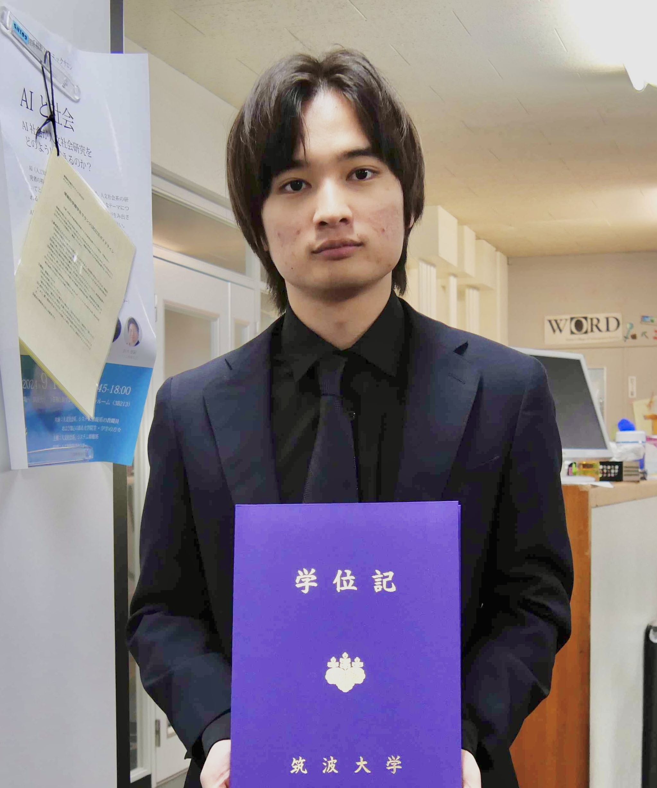

佐多 亮明（Yoshiaki Sata）のページ

自己紹介
自然言語処理が好きで、大規模言語モデル(LLM)の事後学習・安全性・評価ベンチマーク構築に取り組んでいます。
休暇はドライブしたり、スーパー銭湯を巡ったり、スポーツを観戦したり。
興味分野
- 自然言語処理
- 機械学習 / 深層学習 / 強化学習
- 大規模言語モデル
- AIセーフティ
- 合成データ生成
学歴
- 2024年4月 ~ 2026年3月筑波大学大学院システム情報工学研究群情報理工学位プログラム
- 2020年4月 ~ 2024年3月筑波大学情報学群情報科学類
- 2017年4月 ~ 2020年3月東京都立新宿高等学校
職歴
正社員
- 2026年4月 ~ 現在Research Engineer @ SB Intuitions株式会社（ソフトバンク株式会社から出向）
インターン
※下記は全てMachine Learning Engineerとして従事- 2024年12月 ~ 2026年3月シェルパ・アンド・カンパニー株式会社
- 2024年8月 ~ 2024年9月ソフトバンク株式会社
- 2024年4月 ~ 2024年7月株式会社ELYZA
リサーチアシスタント
- 2025年10月 ~ 2026年3月国立情報学研究所 大規模言語モデル研究開発センター
資格
- 応用情報技術者
- TOEIC 800点
- サウナ・スパ健康アドバイザー